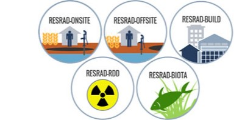
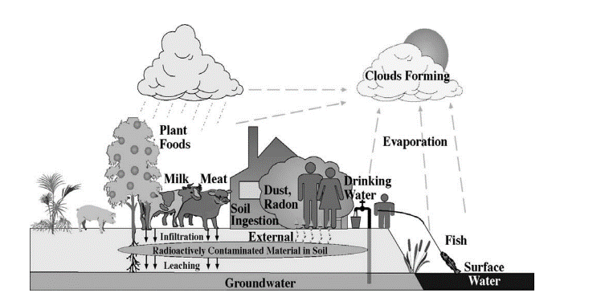
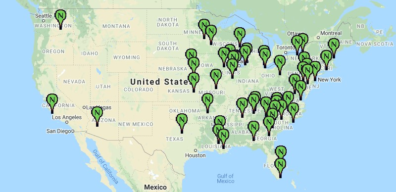
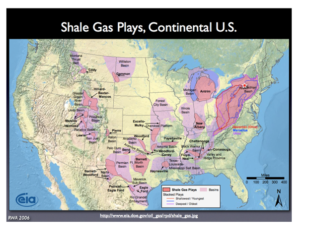

Major EPA Projects
Dr. Mauro was the principal investigator for the preparation of background information documents in support of EPA guidance and regulations that can be grouped into the following categories
- Drinking water Standards (40 CFR 141)
- Technologically Enhanced Naturally Occurring Radionuclides (TENORM)
- Research and analysis of TENORM) in support of background information documents, technical guidance, and standard setting on upstream, midstream, and downstream facilities and activities in the shale oil and gas industries
- Protective Action Guides (PAGs) and Derived Response Levels (DRLs) for drinking water
Each of these projects involved:
- Compilation and review of journal publications, white papers, fact sheets, and similar publications published by federal and state agencies and the private sector, and
- Multimedia modeling and associated radiation dose and risk assessments using widely accepted models, such as RESRAD and MicroShield(c)




Support of the Conference of Radiation Control and program Directors (CRCPD)
Dr. Mauro provided technical support to CRCPD in revising guidance set forth in CRCPD Suggested State Regulation (SSR) for Control of Radiation, Part N - Regulation and Licensing of Technologically Enhanced Naturally Occurring Materials (TENORM).
This email may contain privileged and confidential information intended only for the use of the specific entity named herein.